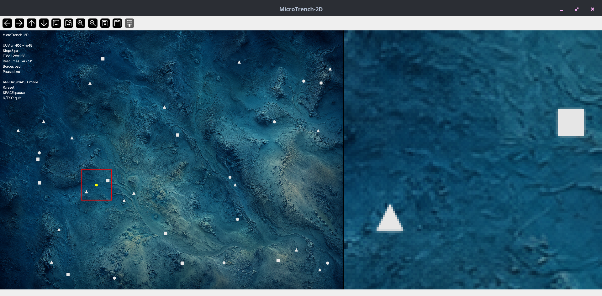
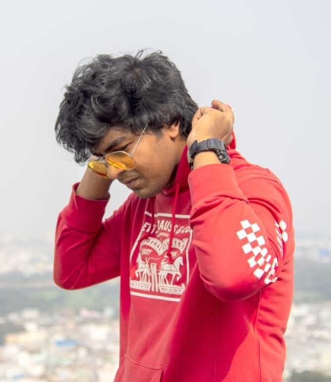
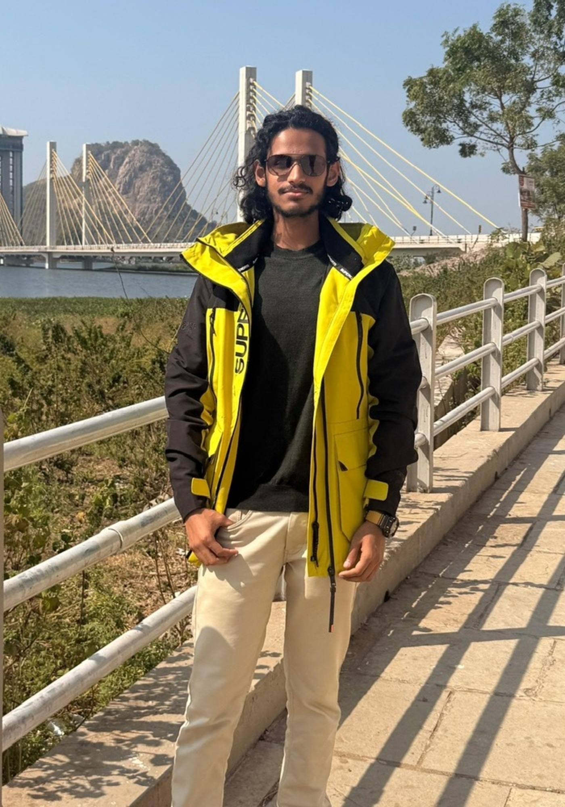

Coordinated robotic swarms for seabed mapping, environmental sensing, and distributed ocean surveys.
CURRENT MISSION
Decentralized intelligence for marine swarms.
ACTIVE TRACK
ALGORITHM-FIRST
CURRENT PHASE
PROTOTYPING
At Peacock Dynamics, we develop control and coordination algorithms for marine swarms. We are an independent research group studying how local decisions shape collective behavior when sensing and communication are limited. Our work brings together coverage planning, distributed task allocation, and motion control. The aim is to survey larger areas while reducing repeated effort and maintaining separation between vehicles.
We test these methods in simulation, measuring coverage, redundant motion, and vehicle separation. We examine how a swarm responds to incomplete information, communication limits, and individual failures before moving toward marine integration. The applications we are working toward include seabed mapping, environmental sensing, resource prospecting, and longer exploration missions. Our goal is to make wider ocean surveys practical with low-cost vehicles that can distribute the work and adapt with less operator intervention.
Algorithms for coverage, guidance, perception, task allocation, and coordination under limited communication.
Develop and evaluate the autonomy stack in controlled simulations before progressing toward marine robotic integration.
LATEST WORK
Underwater exploration and multi-robot coordination
MicroTrench-2D provides a lightweight simulation for prototyping underwater exploration algorithms. MultiUUV-Link builds on it to test how teams of unmanned underwater vehicles (UUVs) coordinate, share information under communication limits, and recover from agent failures.

MICROTRENCH-2D
Lightweight marine-autonomy prototyping.
A CPU-only 2D sandbox for developing and debugging underwater exploration and resource-discovery algorithms. MicroTrench-2D uses local perception, hidden world information, discrete motion, and persistent discovery memory. It deliberately abstracts hydrodynamics, vehicle dynamics, and sensor physics so exploration logic can be tested before adding those complexities or extending to multi-UUV coordination.

MULTIUUV-LINK
Decentralized, communication-aware mission autonomy.
A research prototype validated in simulation, with four UUV agents using bounded local perception, persistent private knowledge, explicit range-limited communication, distributed frontier-task allocation, adaptive replanning, predictive safety, and heartbeat-based fault recovery. The canonical Hybrid benchmark achieved 98.63% mean final coverage with 0.2337 mean redundancy; its fault-recovery demonstration reassigned orphaned work, discovered all 10/10 resources, and maintained 131.52 px minimum separation above the required 128 px threshold.
TECHNICAL LINEAGE
From prior experiments to marine autonomy
10 PRIOR WORKS · 05 CAPABILITY LAYERS
These prior projects span aerial, terrestrial, planetary, and simulation-based robotics. They developed methods in control, perception, mapping, guidance, and multi-agent coordination that now inform our marine autonomy work. Each group below connects the original work to its relevance for future marine systems.

CAPABILITY LAYER 01
Simulation and Local Navigation.
MicroUAV-2D established a lightweight, CPU-only sandbox for local visual observations and discrete XY motion. AgriDroneRL extended this foundation with PPO-based, first-visit coverage over a vegetation utility field. Together, they provide the simulation and local-navigation primitive now being adapted toward marine survey and seabed-coverage algorithms.

CAPABILITY LAYER 02
Swarm Coordination and Coverage.
PPO-Driven Swarm Control combined learned local motion with repulsion, directional graph consensus, and stochastic roles, eliminating 138 close encounters while preserving coordinated coverage. The Boustrophedon Navigator added a deterministic survey primitive with complete lane coverage and 0.0518 average cross-track error. Together, these methods inform structured, communication-aware coverage for future marine robot swarms.

CAPABILITY LAYER 03
Stability, Guidance, and Optimal Control.
InterceptDynamics-Py compared classical PD guidance with constrained MPC using relative-state dynamics, acceleration limits, and slew-rate bounds. Cart-Pole LQR demonstrated state-space stabilization under continuous stochastic disturbance. These control primitives inform our approach to trajectory regulation, target-relative navigation, and disturbance-aware guidance for future marine vehicles.

CAPABILITY LAYER 04
Sensor Interpretation and Semantic Mapping.
Reflect-Aug-Seg studied range-aware signal augmentation for LiDAR, showing measurable semantic improvement from lightweight reflectivity proxies. VLMaps added persistent semantic spatial memory through visual-language embeddings and open-vocabulary map queries. Originally developed for ground and indoor settings, these methods now inform how Peacock Dynamics approaches marine perception, environmental mapping, and autonomy using semantic maps under uncertain sensing.

CAPABILITY LAYER 05
3D Reconstruction and Robotics Translation.
ApolloSplat-Py reconstructed a lunar terrain patch from 15 historical images, producing a 580,552-point cloud and ROS2-ready mesh assets. TerraDrop-PX4 connected perception to simulated deployment through ROS2, Gazebo, PX4 offboard control, camera geometry, and visual servoing. Together, these projects establish a pipeline from environment reconstruction to closed-loop robotic interaction, now informing marine terrain modeling and autonomy integration.
Founders & Technical Direction

MODELING · SIMULATION · AUTONOMY · SWARM CONTROL
Ayushman Mishra
Ayushman Mishra is a co-founder of Peacock Dynamics and a robotics engineer working across control systems, physics-based modeling, simulation, reinforcement learning, perception, and multi-agent autonomy. His work follows an algorithm-first engineering approach: model the system, build the simulation, stress the controller, and study the failure modes before moving toward deployment.
His technical background spans swarm coordination, autonomous navigation, optimal control, robotic perception, ROS2/Gazebo simulation, PX4-based aerial autonomy, and simulation-first autonomy development. Projects involving PPO-driven swarm coverage, UAV navigation over utility fields, LQR-based disturbance rejection, visual-servoing drone control, and terrain reconstruction pipelines form part of the foundation now informing Peacock Dynamics.
At Peacock Dynamics, Ayushman leads the technical direction while working with collaborators across robotics, mechanical systems, aerospace, and data science. The research group is adapting prior autonomy research toward marine robotic exploration, where communication is limited, dynamics are uncertain, sensing is imperfect, and distributed robotic teams must operate beyond continuous human supervision.

MODELLING · SIMULATION · AERODYNAMICS · R&D
Rajeev Tidke
Rajeev Tidke is a co-founder of Peacock Dynamics and a mechanical engineer working across aerospace design, computational fluid dynamics, structural analysis, and engineering development. His approach is to develop the concept, model the system, analyze its behavior, build the prototype, validate its performance, and then move toward a functional product.
His technical background spans UAV aerodynamics, CFD, FEA, numerical optimization, genetic algorithms, propulsion systems, CAD-driven design, and prototype development. Projects involving optimized UAV platforms, aerodynamic simulation and design tools, electric-wheel dynamometers, and solid rocket motor systems form part of the foundation now informing Peacock Dynamics, supported by experience integrating simulation, fabrication, and experimental testing into a single development workflow.
At Peacock Dynamics, Rajeev leads the mechanical engineering and R&D direction, taking technical concepts through computational modelling, mechanical design, optimization, prototyping, and validation. His focus is on connecting simulation, fabrication, and experimental testing to assess how designs perform as physical systems.
CHALLENGES WE ARE TACKLING
Coordinating robots under marine operating constraints
-
01
Mission-aware swarm coordination
Marine robotic teams must coordinate across mapping, monitoring, inspection, and distributed search tasks while avoiding redundant motion and preserving mission coverage.
-
02
Autonomy under uncertain dynamics
Currents, drag, sensing noise, localization drift, and changing environmental conditions make marine motion difficult to model and control. Robust algorithms must remain useful when the model is incomplete.
-
03
Communication-constrained cooperation
Underwater communication is limited, delayed, and intermittent. Swarm behavior must therefore rely on decentralized decision-making rather than continuous centralized supervision.
-
04
From simulation to deployable systems
Moving beyond simulation requires integrating algorithms with robotic middleware, onboard computation, sensing, and propulsion, then evaluating them in controlled field tests for stability, safety, and interpretability.